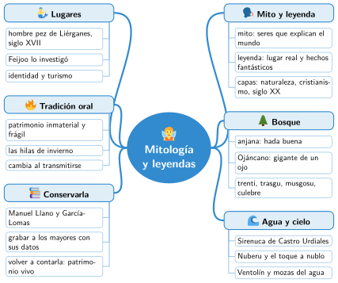

Bloque II · Cantabria, patrimonio cultural
UD07 La mitología y las leyendas de Cantabria
Sesiones
- Sesión 7.1 El origen de la mitología cántabra
- Sesión 7.2 Seres del bosque y de la montaña
- Sesión 7.3 Seres del agua y del cielo
- Sesión 7.4 Leyendas de lugares de Cantabria
- Sesión 7.5 La tradición oral y su transmisión
Al terminar la unidad
Mapa mental de la unidad

✏️ Repasa la unidad con el mapa: tapa una rama y explica en voz alta lo que pone.